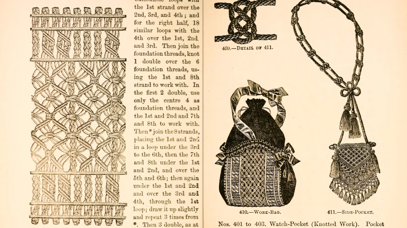
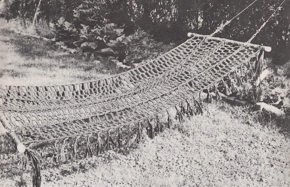
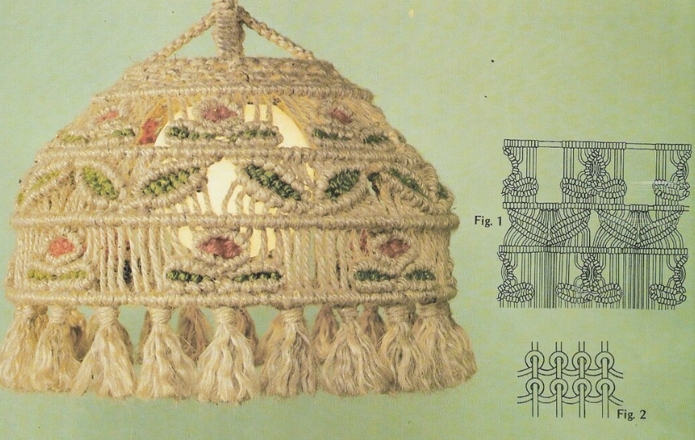

Arte con nudos
Una técnica milenaria de entrelazado
El macramé es una técnica artesanal de tejido que ha cautivado a personas de diferentes culturas y épocas a lo largo de la historia. Su origen se remonta a tiempos antiguos, con evidencias de su práctica en diferentes partes del mundo, como Egipto, China, Persia y América del Sur. A lo largo de los siglos, esta técnica ha evolucionado y ha dejado su huella en diversas culturas, adaptándose a diferentes estilos y usos. El término "macramé" tiene sus raíces en la palabra turca "makrama", que significa "nudo" o "borla".  Este nombre es apropiado, ya que el macramé se basa en la creación de nudos decorativos y patrones entrelazados que forman una estructura única. Durante la Edad Media, el macramé se extendió por Europa, especialmente en España e Italia, donde fue adoptado por los marineros como una forma de pasar el tiempo durante los largos viajes en el mar. Los marineros utilizaban esta técnica para crear objetos decorativos, como pulseras, collares y bordados en las velas de los barcos. Con el tiempo, el macramé se convirtió en una expresión artística y decorativa popular en la Europa del siglo XVII y XVIII. Sin embargo, fue durante el siglo XIX cuando el macramé experimentó un renacimiento significativo. Durante la era victoriana, la técnica del macramé se popularizó como una forma de arte doméstico y se utilizaba para decorar cortinas, lámparas, mantas y ropa. Las mujeres de clase alta disfrutaban creando elaboradas piezas de macramé para adornar sus hogares y exhibir su destreza artística. Durante el siglo XX, el macramé vivió un resurgimiento en la década de 1960 y 1970, cuando fue abrazado por la cultura hippie y el movimiento de contracultura.  La técnica se convirtió en un medio para expresar la individualidad y la creatividad, y se utilizaba para crear prendas de vestir, accesorios y decoraciones para el hogar. El macramé se convirtió en un símbolo de la época y se asoció con la estética bohemia y el espíritu libre de la época. En la actualidad, el macramé ha experimentado un renacimiento en el mundo del diseño de interiores y la moda. Los diseñadores y artesanos contemporáneos han llevado esta antigua técnica a nuevos niveles, creando piezas innovadoras y modernas que combinan tradición y estilo contemporáneo. Desde tapices de pared y lámparas colgantes hasta joyería y accesorios de moda, el macramé ha encontrado su lugar en el mundo del diseño y la decoración. La historia del macramé es un testimonio de su versatilidad y atemporalidad.  Esta técnica artesanal ha perdurado a lo largo de los siglos, adaptándose a diferentes culturas y estilos de vida. Desde su origen en las civilizaciones antiguas hasta su resurgimiento en la era moderna, el macramé continúa siendo una forma de expresión artística y creativa que nos conecta con nuestro pasado y nos inspira en el presente.